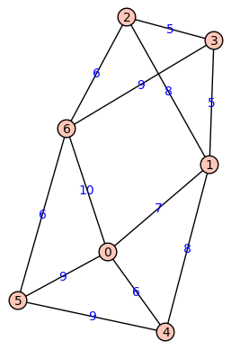

Now that we have some basic notions of trees under our belts, we will look at the problem of finding a spanning tree for a graph -- that's a tree that contains all of the vertices of a graph but not all of the edges. Spanning trees provide a sort of "skeleton" structure for a complex graph and have appliations in search algorithms, network design, and other areas in CS. We'll look at Prim's Algorithm for finding a minimum spanning tree for a weighted graph -- that is, a spanning tree inside a weighted graph that has the lowest total cost.
Basic objectives: Each student is responsible for gaining proficiency with each of these tasks prior to engaging in class discussions, through the use of the learning resources (below) and through the working of exercises (also below). Note that important new terminology is given in italics.
Advanced objectives: The following objectives are the subject of class discussion and further work; they should be mastered by each student during and following class discussions.
Reading: Read Section 10.2 of your textbook except for the part at the end on the "Minimum Diameter Spanning Tree Problem". You can read that if you want to, but it's optional.
Video:
The following exercises are to be done during and following your reading and viewing of the resources. Work these out on paper and then enter the responses into the appropriate submission form (see Submission Instructions) by the deadline. You will receive a mark of Pass if each item response shows a good-faith effort to be right and is submitted prior to the deadline.
The exercises below refer to this weighted graph. The weights are superimposed on the edges:

In case you can't see the edge weights, the complete weighted edge list is: [(0, 1, 7), (0, 4, 6), (0, 5, 9), (0, 6, 10), (1, 2, 8), (1, 3, 5), (1, 4, 8), (2, 3, 5), (2, 6, 6), (3, 6, 9), (4, 5, 9), (5, 6, 6)].
Submit your responses using the form at this link: http://bit.ly/1lj1gNO